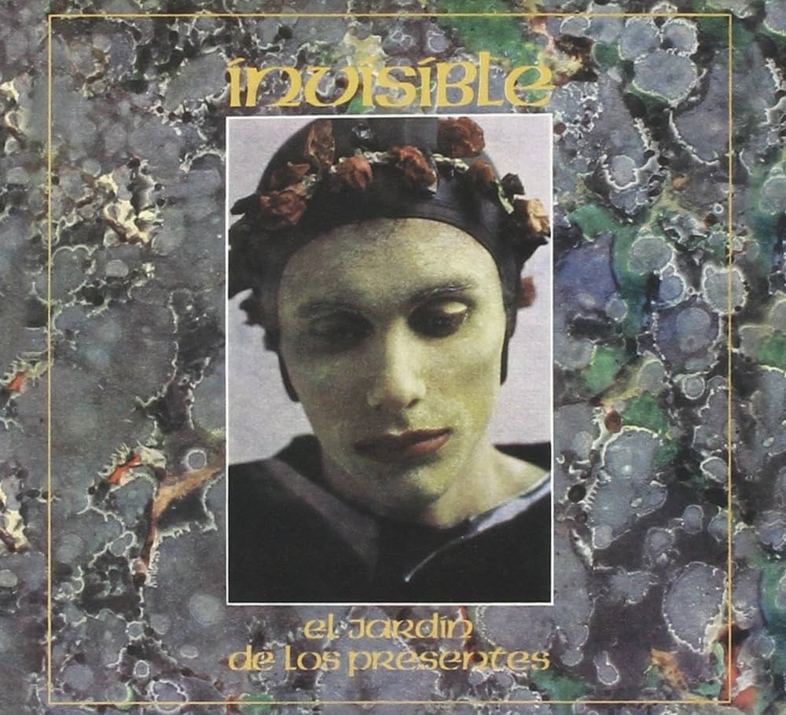

Soy Jessica Arahí Herrera, me gusta que me llamen Arahí, tengo 23 años. Vivo con mi pareja, Gandalf un gatito de 3 años y Almendra un cachorrito de 3 meses.
Son ellos:
Me gusta mucho la música, y uno de mis álbunes favoritos es El Jardin de los Presentes, de Invisible. Admiro mucho a Luis Alberto Spinetta.
Como la gran mayoría uso Facebook, pero la aplicación que más uso es YouTube Music y Spotify ya que la mayor parte del día escucho música
También me gusta usar MAX o Netflix para tener algo de fondo